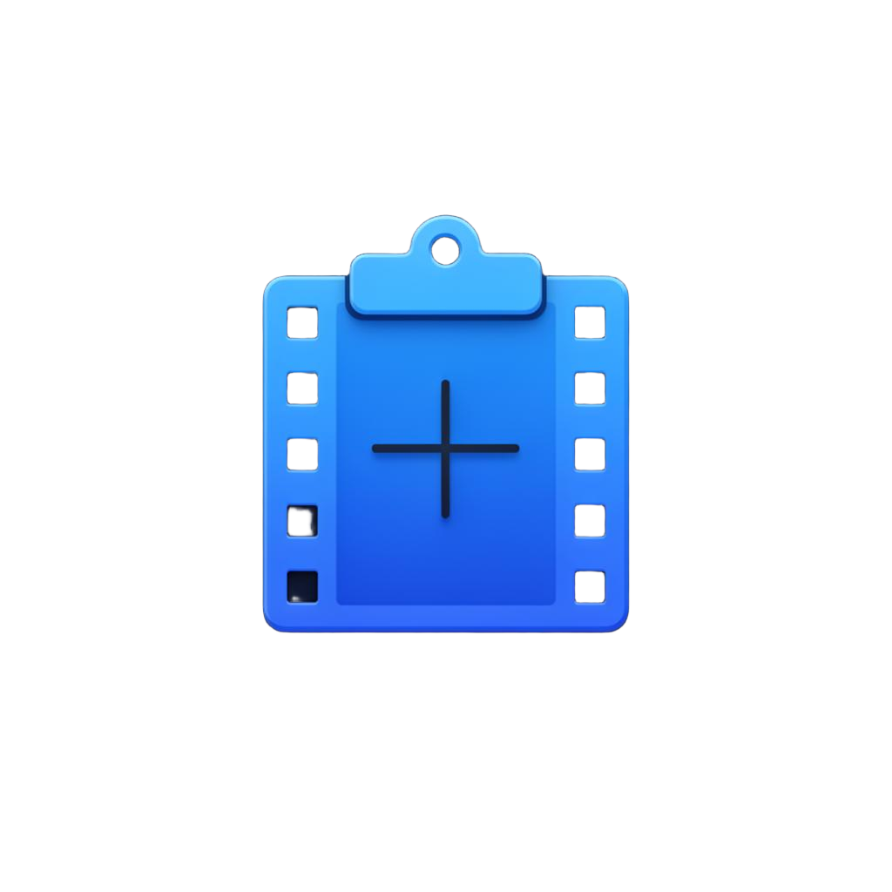

Screen capture made simple. Screenshots, video, and GIF — all from your system tray.
Capture a region, full screen, or window. Saves as PNG or JPEG with instant clipboard copy.
Record any region or your full screen to H.264 MP4. Built-in timer and stop controls.
Record animated GIFs with configurable frame rate. Perfect for quick demos and bug reports.
Trigger captures from any app. Fully customizable keyboard shortcuts in settings.
Get notified when captures complete. Click to open the file or its location.
Save location, file naming templates, countdown timer, image format, GIF framerate, and more.
TinyClips runs as a self-contained app — no installer required.
Grab the latest release for your architecture from GitHub Releases.
TinyClips-x64.zip or TinyClips-arm64.zip
Unzip to any folder, for example:
C:\Program Files\TinyClips\
Launch TinyClips.exe. It appears in your system tray — right-click to capture.
Enable "Launch at login" in Settings → General
| Action | Shortcut |
|---|---|
| Screenshot | Ctrl + Alt + Shift + 5 |
| Record Video | Ctrl + Alt + Shift + 6 |
| Record GIF | Ctrl + Alt + Shift + 7 |
| Stop Recording | Ctrl + . |
| Region mode | R |
| Screen mode | S |
| Window mode | W |
| Cancel | Esc |